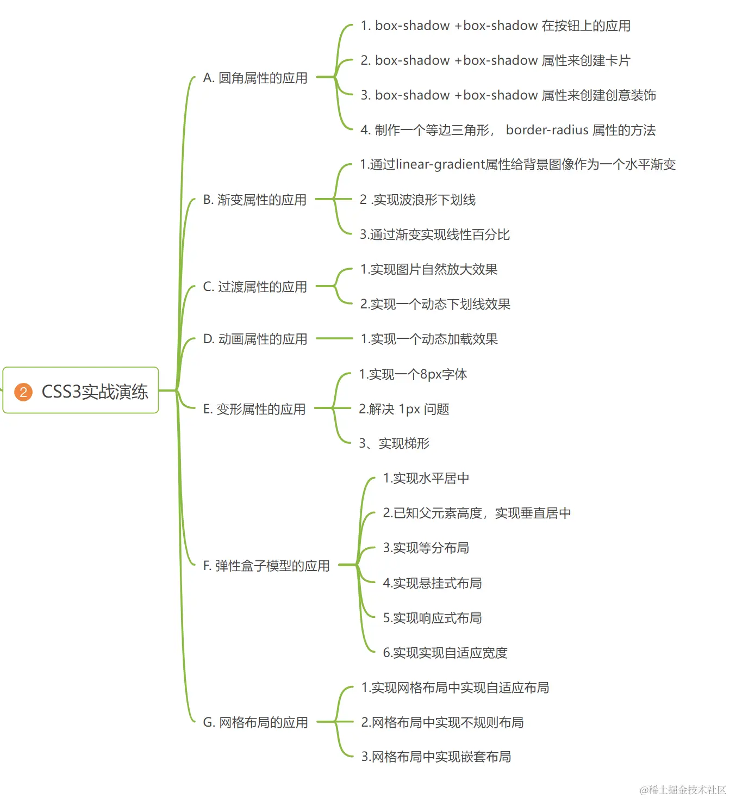

Shadow
创建一个从上到下的线性渐变
创建一个从左上到右下的线性渐变
创建一个从左到右的线性渐变，同时指定三个颜色节点
创建一个圆形径向渐变
创建一个椭圆形径向渐变
创建一个以中心点为起点的径向渐变
创建一个以右上角为起点、大小为50%的径向渐变
过度属性
按钮
卡片
水平渐变
波浪形下划线/div>

动态下划线效果
8px字体
解决 1px 问题-后
解决 1px 问题-前
悬挂内容
正文1
正文2
正文3
正文4
Child 1
Child 2
Child 3
内容1
内容2
内容3
内容4
内容5
内容6
内容7
内容1
内容2
内容3
内容4
内容5
内容6
内容7
内容1
内容2
内容3
内容4
内容5
内容6
内容7